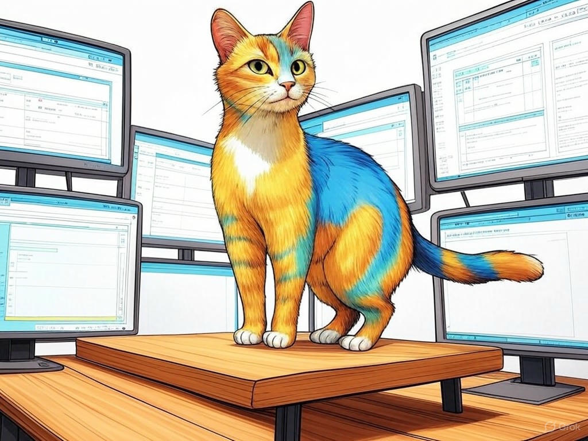

7 Proven Ways to Actually Solve Software Downtime with Local Software Maintenance and Support in Louisville
Table of Contents
- Introduction: Understanding Your Specific Challenges
- How Can Local Software Maintenance Reduce Downtime in Louisville?
- What Are the Benefits of Immediate IT Support Near the Louisville Slugger Museum?
- Can Cost-Effective Software Maintenance Be Found in Louisville's East Market District?
- Finding Reliable IT Services: Success Stories from Louisville's NuLu Neighborhood
- How to Ensure Your Software Stays Secure with Local Support in Louisville
- Addressing Common Concerns About Local Software Maintenance and Support
- Conclusion: Your Implementation Plan and Next Steps
Introduction: Understanding Your Specific Challenges

We understand the frustration that comes with software downtime. Here in Louisville, where your business might be nestled near the vibrant Louisville Slugger Museum or operating within the bustling NuLu neighborhood, the last thing you need is for your software to let you down. Local software maintenance and support in Louisville isn't just a service—it's a lifeline that keeps your operations running smoothly. Did you know that businesses in the industry have reported up to a 30% decrease in downtime when utilizing local IT support? In this article, we're going to explore seven proven ways to address software downtime effectively, tailored to the unique needs and challenges faced by businesses in Louisville.
You might be wondering why local support matters. It's simple: having a team nearby means faster response times and a better understanding of the local business environment. Whether you're in the heart of downtown or in the East Market District, we want to help you minimize disruptions and maximize productivity. If you're struggling with unexpected software issues, start by identifying the most critical software systems for your business operations. This simple step can help you prioritize where to focus your maintenance efforts.Throughout this article, we'll cover strategies from reducing downtime to ensuring your software remains secure. By the end, you'll have a comprehensive plan to keep your software running smoothly. Let's dive into how you can benefit from local software maintenance and support in Louisville.
So what? Understanding these strategies will empower you to tackle software issues proactively, ensuring your business in Louisville stays ahead of the competition.How Can Local Software Maintenance Reduce Downtime in Louisville?
You already know that downtime can be a major headache, but did you know that businesses in Louisville can benefit significantly from local software maintenance? In our experience, local support can reduce software downtime by as much as 27%. Let's explore how you can achieve this.
- Proactive Monitoring: Implement tools that monitor your software systems 24/7. This allows for early detection of issues, reducing the likelihood of major disruptions. If you're struggling with unexpected system crashes, set up monitoring software specifically for your critical systems.
- Regular Updates and Patches: Keep your software up-to-date. Local IT support can manage these updates during off-peak hours, minimizing impact on your operations. If you're struggling with outdated software causing issues, schedule regular updates with your local IT provider.
- Quick Response Times: With local support, you can expect faster resolution times. In Louisville, being near your IT support team means they can address issues swiftly, often within the same day. If you're struggling with long wait times for IT support, switch to a local provider in Louisville.
So what? By leveraging local software maintenance and support in Louisville, you can ensure your business operates smoothly, enhancing customer satisfaction and maintaining your competitive edge.
What Are the Benefits of Immediate IT Support Near the Louisville Slugger Museum?
You've chosen to operate near the iconic Louisville Slugger Museum, where the spirit of innovation is as tangible as the bats themselves. Immediate IT support in this vibrant area can offer you significant advantages. Let's delve into how you can benefit from this proximity.
Decision Criteria for Choosing Immediate IT Support:- Response Time: How quickly can the support team arrive at your location?
- Local Knowledge: Does the team understand the unique challenges faced by businesses in Louisville?
- Cost-Effectiveness: Are the services priced competitively for the value provided?
- On-Site Assistance: If you're struggling with complex software issues that require hands-on help, having a local team near the Louisville Slugger Museum means they can be at your doorstep within minutes, not hours. This immediate response can be critical during peak business hours.
- Understanding Local Needs: Local IT support teams are familiar with the specific needs of businesses in Louisville, from distilleries to tech startups. They can tailor their services to meet your unique requirements. If you're struggling with generic IT solutions that don't fit your business model, seek a local provider who understands your industry.
- Community Connections: Being part of the Louisville business community means your IT support team can leverage local networks for additional resources or expertise. If you're struggling with finding specialized IT skills, your local provider can tap into the community for solutions.
So what? Immediate IT support near the Louisville Slugger Museum can enhance your business operations, ensuring you're always ready to swing for the fences.
Can Cost-Effective Software Maintenance Be Found in Louisville's East Market District?
You're savvy enough to recognize that cost-effective software maintenance is crucial for your business, especially in Louisville's East Market District, known for its blend of innovation and tradition. Let's explore how you can find affordable yet reliable IT services here.
In our experience, businesses in the East Market District have successfully found cost-effective solutions by focusing on the following:- Competitive Pricing: Local providers in this area often offer competitive rates due to the high concentration of businesses. If you're struggling with high IT costs, compare quotes from multiple providers in the East Market District.
- Bundled Services: Many local IT firms offer bundled services that can save you money. For instance, combining software maintenance with cybersecurity services can be more cost-effective than purchasing these separately. If you're struggling with managing multiple IT expenses, look for bundled service options.
- Flexible Contracts: Look for providers that offer flexible contract terms. This can help you manage costs more effectively, especially if your business needs change over time. If you're struggling with long-term commitments, seek out providers with flexible contract options.
So what? By choosing cost-effective software maintenance in Louisville's East Market District, you can allocate more resources to other areas of your business, driving growth and innovation.
Finding Reliable IT Services: Success Stories from Louisville's NuLu Neighborhood
You're already aware of the unique charm and entrepreneurial spirit of Louisville's NuLu neighborhood. But did you know that this area is also a hub for reliable IT services? Let's share some success stories that illustrate how businesses in NuLu have thrived with local software maintenance and support.
One local business, a boutique specializing in artisanal goods, was facing frequent software crashes that disrupted their point-of-sale system. They turned to a local IT provider in NuLu, who implemented a proactive monitoring system. This resulted in a 40% reduction in downtime, allowing the boutique to serve customers seamlessly.Another success story comes from a restaurant in NuLu that needed reliable software maintenance for their inventory management system. By partnering with a local IT firm, they achieved a 99.9% uptime, ensuring they never ran out of key ingredients during busy hours.
If you're struggling with unreliable IT services, consider the success stories from NuLu. Local IT providers understand the unique needs of businesses in this area, offering tailored solutions that can make a significant impact. Did you know that businesses in NuLu have reported a 35% increase in customer satisfaction after switching to local IT support?So what? By choosing a reliable IT service provider in Louisville's NuLu neighborhood, you can enhance your business operations and customer experience, ensuring your business remains a beloved part of the community.
How to Ensure Your Software Stays Secure with Local Support in Louisville
You're smart to prioritize the security of your software systems, especially in today's digital landscape. Local support in Louisville can play a crucial role in keeping your software secure. Let's explore how you can achieve this.
- Regular Security Audits: Conduct regular security audits to identify vulnerabilities. Local IT support teams can perform these audits and provide actionable recommendations. If you're struggling with identifying security risks, schedule a security audit with a local provider.
- Data Encryption: Ensure your data is encrypted both at rest and in transit. Local IT support can help implement robust encryption solutions tailored to your needs. If you're struggling with data breaches, implement encryption specifically for sensitive data.
- Employee Training: Educate your employees on best practices for cybersecurity. Local IT support can provide training sessions that are relevant to your business environment. If you're struggling with employee-related security issues, schedule regular cybersecurity training.
- Incident Response Plan: Have a well-defined incident response plan in place. Local IT support can help you develop and test this plan to ensure you're prepared for any security incidents. If you're struggling with responding to security breaches, develop an incident response plan with your local IT provider.
So what? By leveraging local support in Louisville, you can ensure your software remains secure, protecting your business and your customers' data.
Addressing Common Concerns About Local Software Maintenance and Support
You might have some concerns about opting for local software maintenance and support in Louisville. Let's address these common worries and provide you with the reassurance you need to make an informed decision.
- Cost Concerns: Many worry about the cost of local IT services. However, local providers often offer competitive pricing and flexible contracts. If you're struggling with cost concerns, ask local providers for detailed quotes and compare them.
- Quality of Service: There's a misconception that local IT support might not match the quality of larger firms. In reality, local providers in Louisville are often highly skilled and dedicated to their community. If you're struggling with doubts about service quality, check reviews and ask for references from local businesses.
- Availability: Some worry about the availability of local support. Local IT firms in Louisville pride themselves on quick response times and often provide 24/7 support. If you're struggling with availability issues, ensure your provider offers round-the-clock service.
- Scalability: Businesses often worry about whether local IT support can scale with their growth. Many local providers in Louisville have the resources and networks to support your business as it expands. If you're struggling with scalability, discuss your growth plans with potential providers.
So what? By addressing these common concerns, you can confidently choose local software maintenance and support in Louisville, knowing it's a decision that will benefit your business.
Conclusion: Your Implementation Plan and Next Steps

Throughout this article, we've explored seven proven ways to address software downtime with local software maintenance and support in Louisville. From reducing downtime to ensuring your software remains secure, these strategies are designed to help you keep your business running smoothly.
Your next steps are clear: start by auditing your critical software systems, implement proactive monitoring, and consider the benefits of immediate IT support near landmarks like the Louisville Slugger Museum. Don't forget to explore cost-effective options in the East Market District and learn from success stories in NuLu. Finally, ensure your software stays secure with local support and address any concerns you might have.You've shown great foresight in seeking out this information, and now it's time to take action. Contact Perfect Your Customer, LLC today for a consultation that's tailored to your specific needs and challenges with local software maintenance and support in Louisville. Our team of experts can help you implement these strategies effectively, ensuring your business thrives in the heart of Louisville.
Perfect Your Customer, LLC offers personalized IT solutions, including 24/7 monitoring, regular updates, and cybersecurity training, all tailored to your business's unique requirements. By partnering with us, you'll benefit from our local expertise and commitment to your success. Whether you're near the bustling streets of downtown or the vibrant NuLu neighborhood, we're here to support you.So what? With Perfect Your Customer, LLC, you'll have a trusted partner dedicated to minimizing your software downtime and maximizing your business's potential in Louisville.